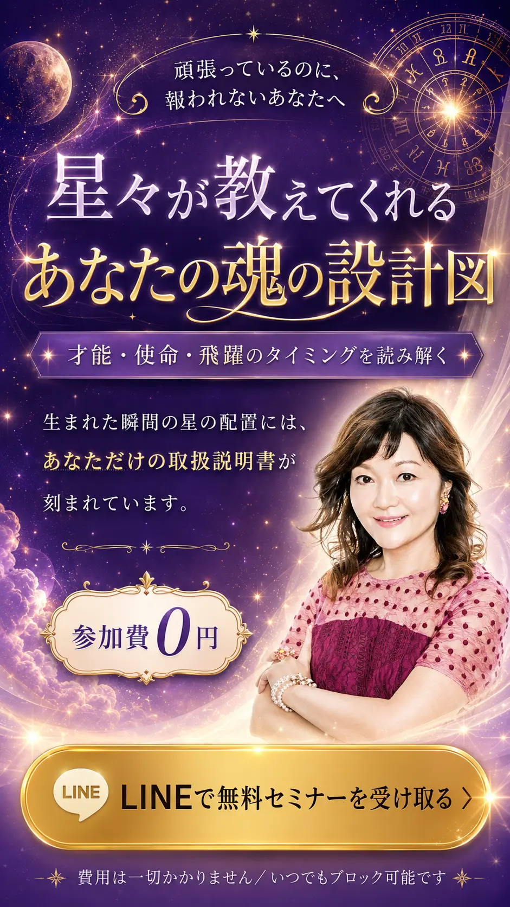
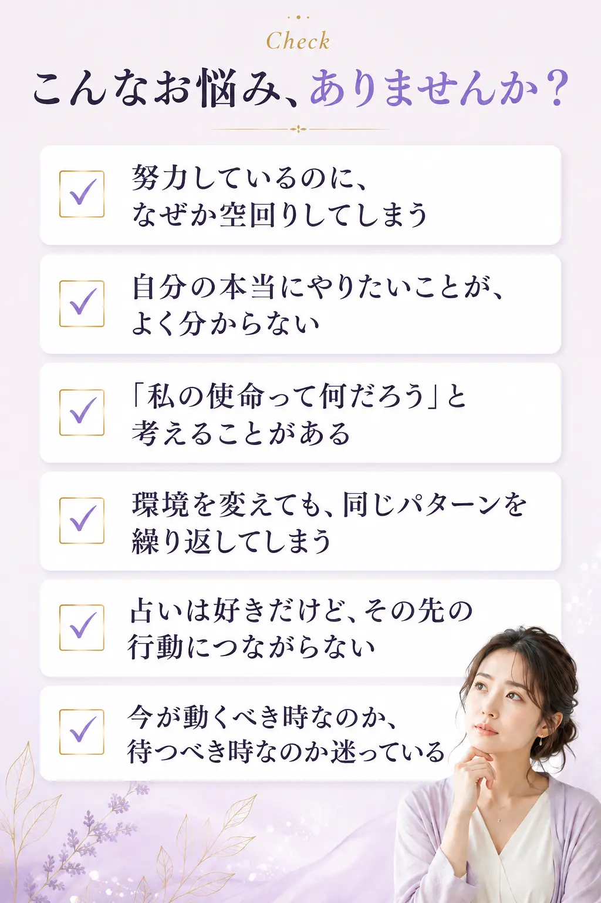
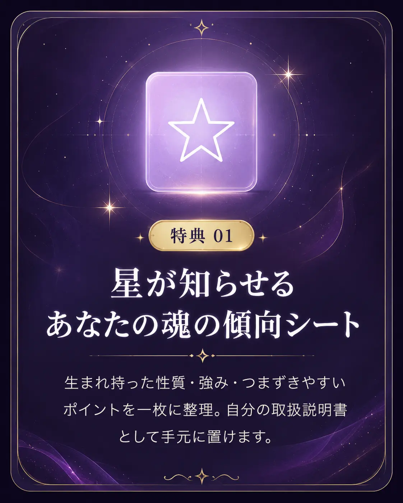
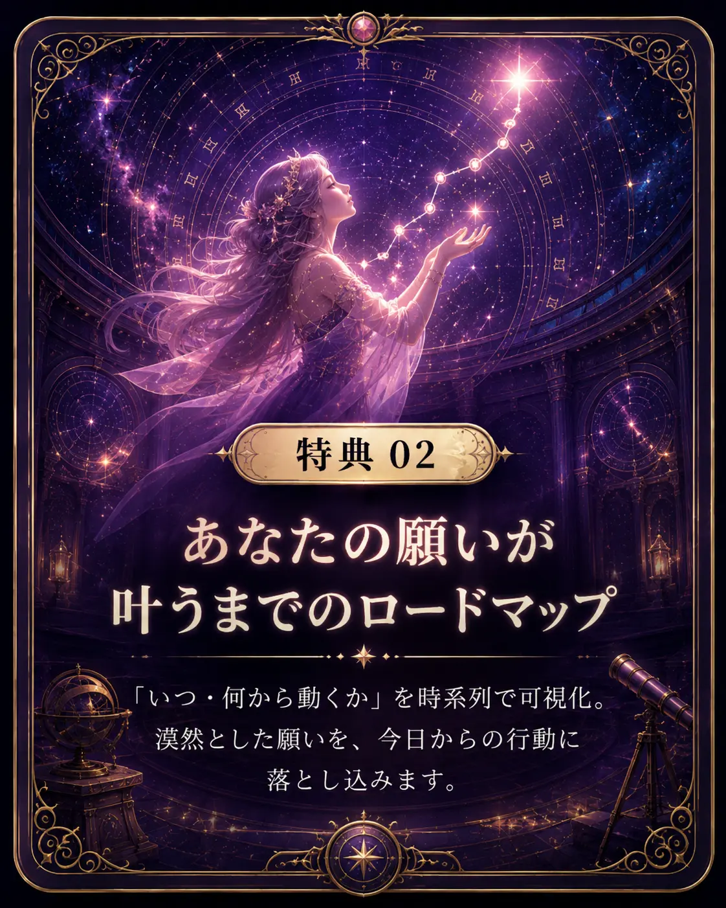
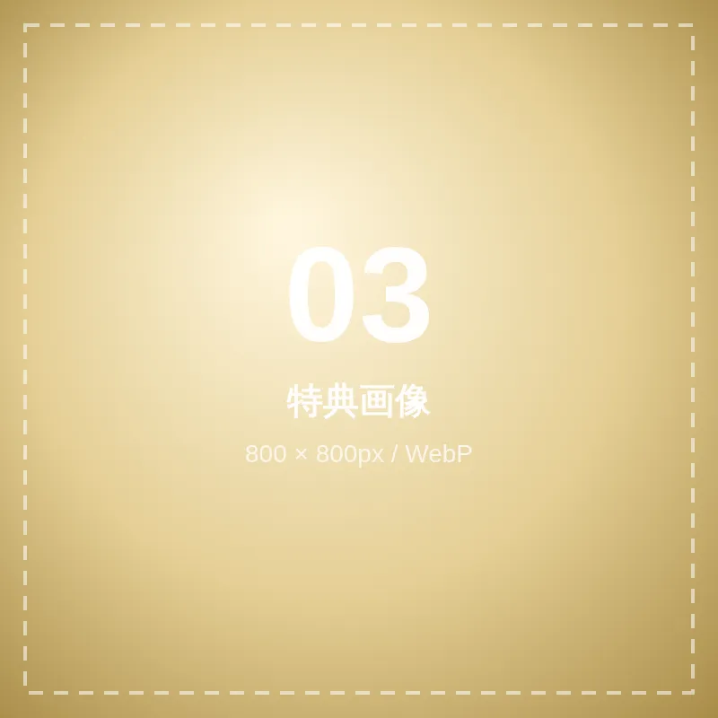
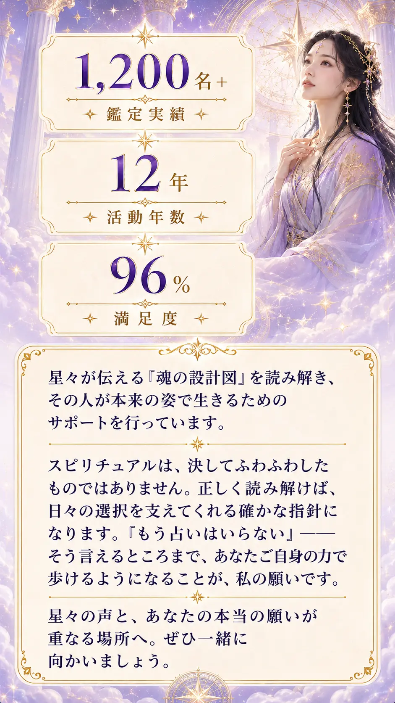
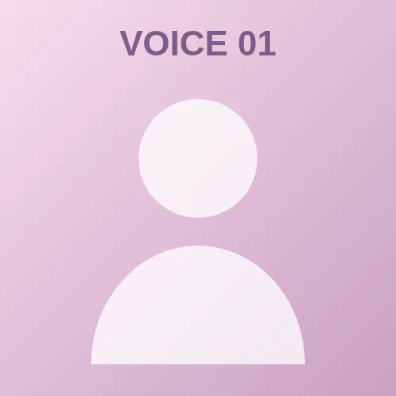
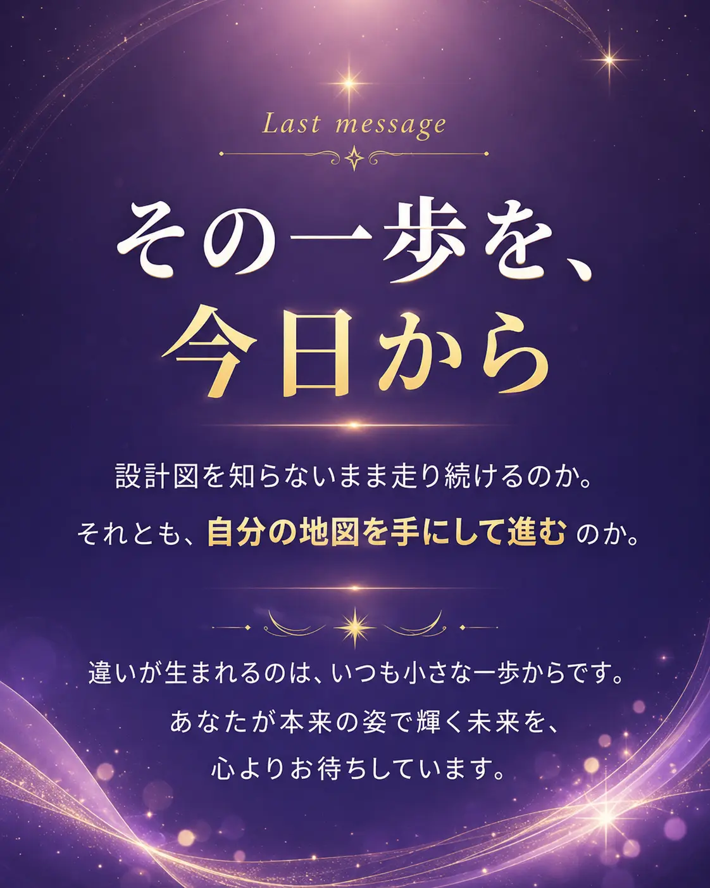

公式LINEにご登録の方へ、順にお届けします
※ 費用は一切かかりません／いつでもブロック可能です
Scroll

ひとつでも当てはまったなら、
それは能力の問題ではなく
「設計図を知らないまま走っている」だけかもしれません。
Why
時代がどう変わっても、どんな困難が訪れても、揺らがないものがあります。それは自分自身の設計図を知っているということ。
夢や情熱だけでは、道は拓けません。自分に何が備わっていて、どこへ向かうべきなのか。その地図を持っているかどうかで、同じ努力の結果はまったく変わってきます。
生まれた日、時間、場所。その瞬間の空の配置は、二度と同じものが訪れません。だからこそそこには、あなただけの情報が刻まれています。
設計図を読み解くだけでは、人生は変わりません。大切なのは、読み解いた先の一歩です。
無料動画セミナーでは、あなたの魂の設計図を知る方法と、そこから理想の未来へ近づいていくための具体的な手順「しあわせ超開運メソッド」を、順を追ってお伝えしていきます。
Gift
公式LINEにご登録いただいた瞬間、無料動画セミナーとあわせてお受け取りいただけます。

特典1／星が知らせる、あなたの魂の傾向シート。生まれ持った性質・強み・つまずきやすいポイントを一枚に整理。自分の取扱説明書として手元に置けます。
特典2／あなたの願いが叶うまでのロードマップ。「いつ・何から動くか」を時系列で可視化。漠然とした願いを、今日からの行動に落とし込みます。
特典3／観るだけで整う、開運ヒーリング動画。1日3分、眺めるだけ。心の状態をやさしく整えて、理想の未来を受け取る準備をしていきます。通常 12,800円相当 → 今だけ すべて無料
Profile
AKI MAKARA
スピリチュアルヒーリングサロン主宰
／ 魂の設計図リーダー

Voice

★★★★★
40代・女性・会社員
うまくいかないのは努力が足りないからだと思っていました。設計図を知って、ただ向いていない方向に力を入れていただけだと気づけたんです。
★★★★★
30代・男性・自営業
ずっと迷っていた転職に、踏み切ることができました。「今がその時期」と背中を押してもらえたのが大きかったです。
★★★★★
50代・女性・主婦
難しい用語がなく、はじめてでもすんなり入ってきました。無料でここまで教えてくださるとは思っていませんでした。
How to
お手続きは30秒ほどで完了します。費用は一切かかりません。
下のボタンから公式LINEの友だち追加画面へ進みます。
「追加」を押すだけ。入力フォームはありません。
動画セミナーと3つの特典が、その場で届きます。
FAQ

※ 費用は一切かかりません／いつでもブロック可能です